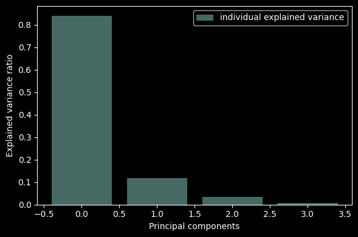

KNN dengan PCA#
Mengimport library yang diperlukan
import pandas as pd
import numpy as np
import pickle
import seaborn as sns
import matplotlib.pyplot as plt
from sklearn.model_selection import train_test_split
from sklearn.preprocessing import StandardScaler
from sklearn.preprocessing import MinMaxScaler
from sklearn.neural_network import MLPClassifier
from sklearn.metrics import accuracy_score
from sklearn.metrics import confusion_matrix
from sklearn.metrics import classification_report
from sklearn.model_selection import GridSearchCV
from sklearn.neighbors import KNeighborsRegressor
from sklearn.preprocessing import LabelEncoder
from sklearn.datasets import load_iris
from sklearn.model_selection import train_test_split
from sklearn.neighbors import KNeighborsClassifier
from sklearn.metrics import accuracy_score
Import data kita
df = pd.read_csv('https://raw.githubusercontent.com/mk-gurucharan/Classification/master/IrisDataset.csv')
jumlah_baris = df.shape[0]
df.head(jumlah_baris)
| sepal_length | sepal_width | petal_length | petal_width | species | |
|---|---|---|---|---|---|
| 0 | 5.1 | 3.5 | 1.4 | 0.2 | setosa |
| 1 | 4.9 | 3.0 | 1.4 | 0.2 | setosa |
| 2 | 4.7 | 3.2 | 1.3 | 0.2 | setosa |
| 3 | 4.6 | 3.1 | 1.5 | 0.2 | setosa |
| 4 | 5.0 | 3.6 | 1.4 | 0.2 | setosa |
| ... | ... | ... | ... | ... | ... |
| 145 | 6.7 | 3.0 | 5.2 | 2.3 | virginica |
| 146 | 6.3 | 2.5 | 5.0 | 1.9 | virginica |
| 147 | 6.5 | 3.0 | 5.2 | 2.0 | virginica |
| 148 | 6.2 | 3.4 | 5.4 | 2.3 | virginica |
| 149 | 5.9 | 3.0 | 5.1 | 1.8 | virginica |
150 rows × 5 columns
Mengecek nilai yang hilang/kosong pada data
df_copy = df.copy()
df_copy.isnull().sum()
sepal_length 0
sepal_width 0
petal_length 0
petal_width 0
species 0
dtype: int64
Mengganti nilai yang mengandung tanda tanya (?) menjadi nilai kosong
df_copy = df_copy.replace('?',np.nan)
Mengecek lagi berapa nilai yang kosong pada data
df_copy.isnull().sum()
sepal_length 0
sepal_width 0
petal_length 0
petal_width 0
species 0
dtype: int64
Setelah itu kita lihat type data pada fitur, jika type datanya bukan numerik/float maka perlu diganti type datanya
df_copy.info()
<class 'pandas.core.frame.DataFrame'>
RangeIndex: 150 entries, 0 to 149
Data columns (total 5 columns):
# Column Non-Null Count Dtype
--- ------ -------------- -----
0 sepal_length 150 non-null float64
1 sepal_width 150 non-null float64
2 petal_length 150 non-null float64
3 petal_width 150 non-null float64
4 species 150 non-null object
dtypes: float64(4), object(1)
memory usage: 6.0+ KB
Memisahkan fitur dan target
# features and target
X = df_copy[['sepal_length', 'sepal_width', 'petal_length', 'petal_width']]
y = df_copy['species']
Melakukan Normalisasi Data pada Fitur dan Target
# Normalisasi pada X
scaler = MinMaxScaler()
X = scaler.fit_transform(X)
# Normalisasi pada y
label = LabelEncoder()
y = label.fit_transform(y)
Menyimpan data normalisasi
# Menyimpan normalisasi ke file
with open('scaler.pkl', 'wb') as file:
pickle.dump(scaler, file)
# Menyimpan normalisasi ke file
with open('label.pkl', 'wb') as file:
pickle.dump(label, file)
Melihat Data yang sudah di Normalisasi
# Membuat DataFrame dari X dan y menggunakan pandas
liat = pd.DataFrame(X, columns=['sepal_length', 'sepal_width', 'petal_length', 'petal_width'])
liat['target'] = y
# Menampilkan DataFrame yang digabungkan
liat.head(jumlah_baris)
| sepal_length | sepal_width | petal_length | petal_width | target | |
|---|---|---|---|---|---|
| 0 | 0.222222 | 0.625000 | 0.067797 | 0.041667 | 0 |
| 1 | 0.166667 | 0.416667 | 0.067797 | 0.041667 | 0 |
| 2 | 0.111111 | 0.500000 | 0.050847 | 0.041667 | 0 |
| 3 | 0.083333 | 0.458333 | 0.084746 | 0.041667 | 0 |
| 4 | 0.194444 | 0.666667 | 0.067797 | 0.041667 | 0 |
| ... | ... | ... | ... | ... | ... |
| 145 | 0.666667 | 0.416667 | 0.711864 | 0.916667 | 2 |
| 146 | 0.555556 | 0.208333 | 0.677966 | 0.750000 | 2 |
| 147 | 0.611111 | 0.416667 | 0.711864 | 0.791667 | 2 |
| 148 | 0.527778 | 0.583333 | 0.745763 | 0.916667 | 2 |
| 149 | 0.444444 | 0.416667 | 0.694915 | 0.708333 | 2 |
150 rows × 5 columns
Membagi dataset menjadi data training dan data testing (0.8/0.2)
# Split data into train and test data
X_train, X_test, y_train, y_test = train_test_split(X, y, test_size=0.2, random_state = 42)
1. Membangun model KNN#
# Membangun model KNN
knn = KNeighborsClassifier(n_neighbors=3)
# Melatih model dengan data latih
knn.fit(X_train, y_train)
# Memprediksi kelas target untuk data uji
y_prediksi_knn = knn.predict(X_test)
# Menghitung akurasi prediksi
print('Accuracy: {:.2f}'.format(accuracy_score(y_test, y_prediksi_knn)))
Accuracy: 1.00
# Membuat DataFrame dari X dan y menggunakan pandas
liat_knn = pd.DataFrame(y_test, columns=['y_test'])
liat_knn['y_prediksi_knn'] = y_prediksi_knn
# Menampilkan DataFrame yang digabungkan
liat_knn.head(jumlah_baris)
| y_test | y_prediksi_knn | |
|---|---|---|
| 0 | 1 | 1 |
| 1 | 0 | 0 |
| 2 | 2 | 2 |
| 3 | 1 | 1 |
| 4 | 1 | 1 |
| 5 | 0 | 0 |
| 6 | 1 | 1 |
| 7 | 2 | 2 |
| 8 | 1 | 1 |
| 9 | 1 | 1 |
| 10 | 2 | 2 |
| 11 | 0 | 0 |
| 12 | 0 | 0 |
| 13 | 0 | 0 |
| 14 | 0 | 0 |
| 15 | 1 | 1 |
| 16 | 2 | 2 |
| 17 | 1 | 1 |
| 18 | 1 | 1 |
| 19 | 2 | 2 |
| 20 | 0 | 0 |
| 21 | 2 | 2 |
| 22 | 0 | 0 |
| 23 | 2 | 2 |
| 24 | 2 | 2 |
| 25 | 2 | 2 |
| 26 | 2 | 2 |
| 27 | 2 | 2 |
| 28 | 0 | 0 |
| 29 | 0 | 0 |
Menyimpan model KNN
# Menyimpan model ke file
with open('knn_model.pkl', 'wb') as file:
pickle.dump(knn, file)
Mencoba mengkategorikan target dari fitur yang diberikan
# Load model dari file
with open('knn_model.pkl', 'rb') as file:
knn_loaded = pickle.load(file)
# Load normalisasi dari file
with open('scaler.pkl', 'rb') as file:
scaler = pickle.load(file)
with open('label.pkl', 'rb') as file:
label = pickle.load(file)
# Buat data baru
data_baru = np.array([[5.1, 3.5, 1.4, 0.2]])
# Scaling data baru menggunakan skalar yang telah dilatih sebelumnya
data_baru_scaled = scaler.fit_transform(data_baru)
# Menggunakan model untuk melakukan prediksi pada data baru
y_pred = knn_loaded.predict(data_baru_scaled)
y_pred_scaled = label.inverse_transform(y_pred)
print(y_pred_scaled)
['setosa']
2. Membangun model KNN dengan PCA#
from sklearn.decomposition import PCA
pca = PCA()
X_new = pca.fit_transform(X)
pca.get_covariance()
array([[ 0.05290845, -0.00454496, 0.05996621, 0.05982683],
[-0.00454496, 0.03263959, -0.02271983, -0.02048285],
[ 0.05996621, -0.02271983, 0.08943348, 0.09155279],
[ 0.05982683, -0.02048285, 0.09155279, 0.1011136 ]])
explained_variance=pca.explained_variance_ratio_
explained_variance
array([0.84141901, 0.11732474, 0.03490564, 0.00635061])
with plt.style.context('dark_background'):
plt.figure(figsize=(6, 4))
plt.bar(range(4), explained_variance, alpha=0.5, align='center',
label='individual explained variance')
plt.ylabel('Explained variance ratio')
plt.xlabel('Principal components')
plt.legend(loc='best')
plt.tight_layout()

pca=PCA(n_components=3)
X_new=pca.fit_transform(X)
print(pca)
PCA(n_components=3)
print(X_new)
[[-6.30361249e-01 1.11556258e-01 -1.69929115e-02]
[-6.23546310e-01 -1.00313199e-01 -4.71201236e-02]
[-6.69792802e-01 -4.72200571e-02 2.16477393e-02]
[-6.54633051e-01 -9.87912747e-02 2.52141464e-02]
[-6.48263265e-01 1.37557689e-01 1.68125515e-02]
[-5.34057000e-01 2.93223042e-01 2.67364715e-02]
[-6.56395887e-01 1.49219390e-02 9.36980789e-02]
[-6.25643957e-01 6.10753191e-02 -1.22695676e-02]
[-6.76525845e-01 -1.96482315e-01 3.81316446e-02]
[-6.46137172e-01 -6.32422300e-02 -5.97536915e-02]
[-5.96654863e-01 2.20941913e-01 -4.97532816e-02]
[-6.38828681e-01 3.65958117e-02 2.62592393e-02]
[-6.62304799e-01 -1.11542611e-01 -5.27164740e-02]
[-7.52700136e-01 -1.66744846e-01 4.99686959e-02]
[-5.98993148e-01 3.84079343e-01 -8.37661851e-02]
[-5.49943265e-01 5.18967671e-01 3.93346854e-02]
[-5.75826838e-01 2.97584158e-01 3.13642188e-02]
[-6.03416352e-01 1.11091056e-01 8.44631071e-03]
[-5.19472697e-01 2.91076041e-01 -7.21939575e-02]
[-6.11239166e-01 2.23088914e-01 4.91771474e-02]
[-5.57504671e-01 1.05673218e-01 -9.39549288e-02]
[-5.78205845e-01 1.84927666e-01 6.06537784e-02]
[-7.37287470e-01 9.51403474e-02 1.00811786e-01]
[-5.06022332e-01 3.14977242e-02 2.79287623e-02]
[-6.07501302e-01 3.33249752e-02 2.27884288e-02]
[-5.90847800e-01 -9.07991421e-02 -6.92768692e-02]
[-5.61311704e-01 5.90546363e-02 3.74519400e-02]
[-6.08105198e-01 1.22160593e-01 -3.79927202e-02]
[-6.12459233e-01 8.55548264e-02 -5.07983746e-02]
[-6.38465424e-01 -5.04908937e-02 1.81769288e-02]
[-6.20563408e-01 -7.64923250e-02 -1.56285342e-02]
[-5.24499797e-01 1.06923372e-01 -4.07626107e-02]
[-6.71580640e-01 3.48802069e-01 2.03436046e-02]
[-6.25725853e-01 4.22207034e-01 1.37373920e-03]
[-6.46137172e-01 -6.32422300e-02 -5.97536915e-02]
[-6.44794486e-01 -1.10459356e-02 -3.67239395e-02]
[-5.93549341e-01 1.59424994e-01 -9.52074622e-02]
[-6.46137172e-01 -6.32422300e-02 -5.97536915e-02]
[-6.93056729e-01 -1.57695991e-01 5.32511726e-02]
[-6.13830365e-01 7.27699333e-02 -3.21124395e-02]
[-6.25672404e-01 1.00486720e-01 2.94461194e-02]
[-6.11679270e-01 -4.10338898e-01 -3.88906153e-02]
[-7.05233577e-01 -8.23038999e-02 8.11763550e-02]
[-5.13510336e-01 9.58202780e-02 1.02292976e-01]
[-5.42524432e-01 2.18262596e-01 6.99886223e-02]
[-6.08415006e-01 -1.12473015e-01 -1.83802954e-03]
[-6.27741603e-01 2.22463837e-01 2.25809884e-02]
[-6.71163934e-01 -6.00049502e-02 4.03336744e-02]
[-6.08468455e-01 2.09247299e-01 -2.99104098e-02]
[-6.29997992e-01 2.44695523e-02 -2.50752220e-02]
[ 2.80302189e-01 1.79104167e-01 -1.68803500e-01]
[ 2.15480616e-01 1.10651837e-01 -2.19931724e-02]
[ 3.22406837e-01 1.27067747e-01 -1.39797870e-01]
[ 5.78520189e-02 -3.27482303e-01 -1.41644064e-02]
[ 2.62090364e-01 -2.95280100e-02 -9.88433459e-02]
[ 1.03249378e-01 -1.21064241e-01 1.01781216e-02]
[ 2.45408415e-01 1.34007509e-01 3.49376392e-02]
[-1.73049862e-01 -3.50926386e-01 5.06363072e-02]
[ 2.13925739e-01 2.07930537e-02 -1.55602071e-01]
[ 1.45599831e-02 -2.11156887e-01 1.27810733e-01]
[-1.15997654e-01 -4.92196511e-01 -2.73708030e-02]
[ 1.37262127e-01 -1.99424890e-02 5.27668151e-02]
[ 4.21737126e-02 -3.05309672e-01 -2.03659024e-01]
[ 1.92245136e-01 -3.92354984e-02 -3.21054262e-02]
[-8.63477364e-03 -8.52503004e-02 5.43960161e-02]
[ 2.19622459e-01 1.09595115e-01 -1.19766665e-01]
[ 1.33148730e-01 -5.82971683e-02 1.08824620e-01]
[-1.45313340e-03 -1.41308951e-01 -9.53172608e-02]
[ 2.52737676e-01 -2.89697847e-01 -1.21933340e-01]
[-6.84349059e-03 -2.38374915e-01 -5.58036035e-02]
[ 2.68574725e-01 4.75123232e-02 1.50068043e-01]
[ 9.82914475e-02 -6.88343901e-02 -6.34086818e-02]
[ 2.88055833e-01 -1.69276212e-01 -1.04516186e-01]
[ 1.44443767e-01 -7.60011400e-02 -9.69464618e-02]
[ 1.58971177e-01 6.74661709e-04 -1.12445517e-01]
[ 2.13897292e-01 6.02044550e-02 -1.13886384e-01]
[ 2.91471162e-01 3.84047698e-03 -1.86125057e-01]
[ 3.69200330e-01 6.39617903e-02 -6.43532102e-02]
[ 1.86491522e-01 -4.92147569e-02 1.54905415e-02]
[-6.98330577e-02 -1.84157938e-01 -8.24953591e-02]
[-2.30111174e-02 -2.86675296e-01 -4.87663860e-02]
[-6.03984734e-02 -2.85119816e-01 -7.30486714e-02]
[ 3.15517406e-02 -1.40058798e-01 -4.21249427e-02]
[ 2.88268024e-01 -1.31613723e-01 6.06296042e-03]
[ 1.09521547e-01 -8.16863968e-02 1.48510364e-01]
[ 1.82994296e-01 1.38800269e-01 1.10742720e-01]
[ 2.77894734e-01 1.05859076e-01 -9.77982529e-02]
[ 1.94130591e-01 -2.38286505e-01 -1.77535129e-01]
[ 3.74890994e-02 -5.30056490e-02 6.25739231e-02]
[ 4.56751701e-02 -2.52090212e-01 1.37607760e-02]
[ 5.44116872e-02 -2.18290080e-01 -2.34360240e-03]
[ 1.75714252e-01 -4.49173945e-04 -1.69858982e-02]
[ 4.80826245e-02 -1.78845122e-01 -5.72444707e-02]
[-1.55147846e-01 -3.76927817e-01 1.68308442e-02]
[ 6.61968321e-02 -1.67184065e-01 1.95292128e-02]
[ 3.28002541e-02 -4.19361117e-02 1.61348922e-02]
[ 6.58335750e-02 -8.00973592e-02 2.76115232e-02]
[ 1.35343993e-01 -2.27145668e-02 -7.27597730e-02]
[-1.59893585e-01 -2.87035477e-01 5.38231874e-02]
[ 6.14795399e-02 -1.16703126e-01 1.48058689e-02]
[ 6.23664457e-01 1.15647066e-01 2.48850460e-01]
[ 3.45475530e-01 -1.56398557e-01 1.22066371e-01]
[ 6.18216418e-01 9.90669300e-02 -5.23802403e-02]
[ 4.17634041e-01 -2.75195872e-02 1.95532874e-02]
[ 5.63837305e-01 2.95243214e-02 9.32731500e-02]
[ 7.50381594e-01 1.49908049e-01 -1.59693158e-01]
[ 1.34785503e-01 -3.29570100e-01 2.28790212e-01]
[ 6.08867175e-01 8.17946034e-02 -1.86973989e-01]
[ 5.10127024e-01 -1.33705870e-01 -1.17982438e-01]
[ 7.22163969e-01 3.32896452e-01 1.10995450e-01]
[ 4.24673447e-01 1.13478768e-01 7.84184458e-02]
[ 4.37241999e-01 -8.84114295e-02 6.95265883e-04]
[ 5.41005805e-01 6.83442026e-02 1.17761227e-02]
[ 3.62341224e-01 -2.42860186e-01 1.40580219e-01]
[ 4.74111588e-01 -1.21028522e-01 2.63225073e-01]
[ 5.14579463e-01 9.82079905e-02 1.72265111e-01]
[ 4.24730340e-01 3.46559657e-02 -5.01292835e-03]
[ 7.50875146e-01 4.61615547e-01 -4.35530146e-02]
[ 8.71766054e-01 6.61724088e-03 -1.87978760e-01]
[ 2.81322790e-01 -3.18538470e-01 -8.80322809e-02]
[ 6.15417260e-01 1.52319946e-01 6.84230039e-02]
[ 3.21819899e-01 -1.40376385e-01 2.03467802e-01]
[ 7.57869597e-01 8.55854956e-02 -2.34057371e-01]
[ 3.56713673e-01 -9.52797265e-02 -2.73337126e-04]
[ 5.31811859e-01 1.67557167e-01 7.11928944e-02]
[ 5.47460931e-01 1.86458962e-01 -1.21772533e-01]
[ 3.28369198e-01 -6.81880163e-02 3.46890628e-02]
[ 3.14821216e-01 -5.58081827e-03 8.13001802e-02]
[ 5.16370746e-01 -5.49166244e-02 6.20654910e-02]
[ 4.84863068e-01 1.14177833e-01 -1.98262286e-01]
[ 6.32829168e-01 5.75085278e-02 -1.93026356e-01]
[ 6.89285158e-01 4.89206016e-01 -1.30646392e-01]
[ 5.43315643e-01 -5.53818263e-02 8.75047132e-02]
[ 2.90675478e-01 -5.83686327e-02 -6.49422863e-02]
[ 3.04492544e-01 -1.62136145e-01 -8.44056312e-02]
[ 7.63872681e-01 1.66123654e-01 -1.22872901e-01]
[ 5.48861298e-01 1.58169429e-01 2.42001577e-01]
[ 4.06828324e-01 6.06573970e-02 2.87925347e-02]
[ 2.92565165e-01 -1.61851537e-02 1.02299989e-01]
[ 5.36288513e-01 1.18825141e-01 7.05277879e-03]
[ 6.14380938e-01 9.18597492e-02 1.20742316e-01]
[ 5.58850928e-01 1.21165574e-01 6.14020337e-02]
[ 3.45475530e-01 -1.56398557e-01 1.22066371e-01]
[ 6.24488587e-01 1.38444774e-01 8.59520021e-02]
[ 6.39591445e-01 1.65696360e-01 1.72949783e-01]
[ 5.51754628e-01 5.89900210e-02 8.59682495e-02]
[ 4.06277878e-01 -1.72227298e-01 -3.91623409e-03]
[ 4.47292755e-01 3.69963983e-02 4.93363266e-02]
[ 4.89217891e-01 1.49120574e-01 2.38719100e-01]
[ 3.12078952e-01 -3.11506044e-02 1.18672050e-01]]
X_train_new, X_test_new, y_train_new, y_test_new = train_test_split(X_new, y, test_size = 0.3, random_state=42, stratify=y)
# Membangun model KNN dengan PCA
knn_pca = KNeighborsClassifier(n_neighbors=3)
# Melatih model dengan data latih
knn_pca.fit(X_train_new, y_train_new)
# Memprediksi kelas target untuk data uji
y_prediksi_knn_pca = knn_pca.predict(X_test_new)
# Menghitung akurasi prediksi
print('Accuracy: {:.2f}'.format(accuracy_score(y_test_new, y_prediksi_knn_pca)))
Accuracy: 0.93
# Visualising the Test set results
classifier = knn_pca
from matplotlib.colors import ListedColormap
X_set, y_set = X_test_new, y_test_new
X1, X2 = np.meshgrid(np.arange(start = X_set[:, 0].min() - 1, stop = X_set[:, 0].max() + 1, step = 0.01),
np.arange(start = X_set[:, 1].min() - 1, stop = X_set[:, 1].max() + 1, step = 0.01))
plt.contourf(X1, X2, classifier.predict(np.array([X1.ravel(), X2.ravel(),np.zeros((X1.shape[0],X1.shape[1])).ravel()]).T).reshape(X1.shape),
alpha = 0.75, cmap = ListedColormap(('pink', 'lightgreen')))
plt.xlim(X1.min(), X1.max())
plt.ylim(X2.min(), X2.max())
for i, j in enumerate(np.unique(y_set)):
plt.scatter(X_set[y_set == j, 0], X_set[y_set == j, 1],
c = ListedColormap(('red', 'green'))(i), label = j)
plt.title('KNN PCA (Test set)')
plt.xlabel('PC1')
plt.ylabel('PC2')
plt.legend()
plt.show()
<ipython-input-25-83cbfce838ff>:12: UserWarning: *c* argument looks like a single numeric RGB or RGBA sequence, which should be avoided as value-mapping will have precedence in case its length matches with *x* & *y*. Please use the *color* keyword-argument or provide a 2D array with a single row if you intend to specify the same RGB or RGBA value for all points.
plt.scatter(X_set[y_set == j, 0], X_set[y_set == j, 1],